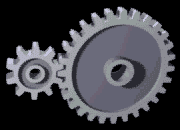
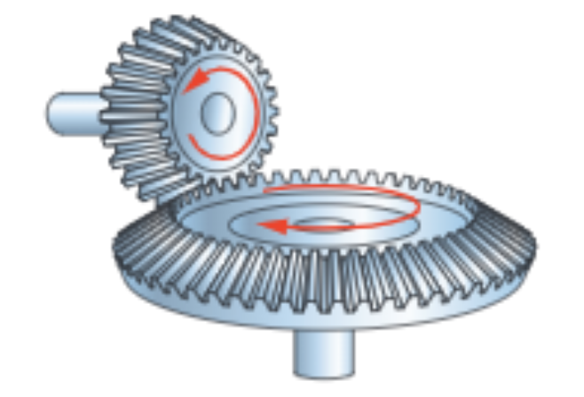
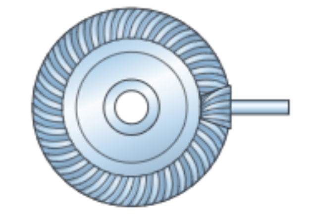
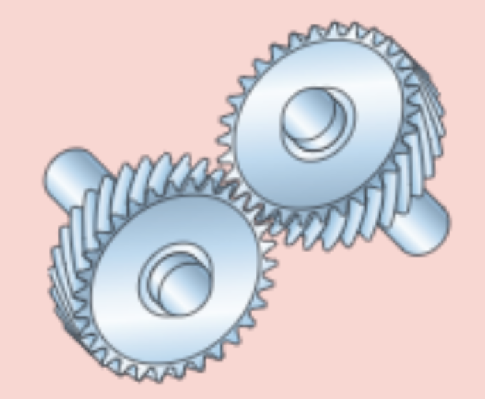
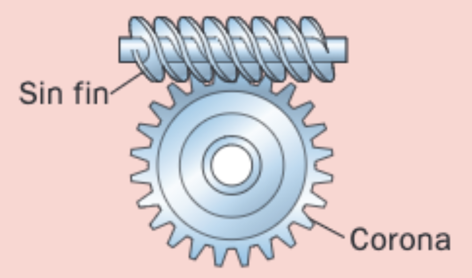
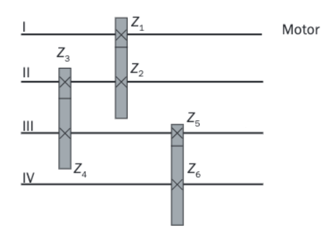
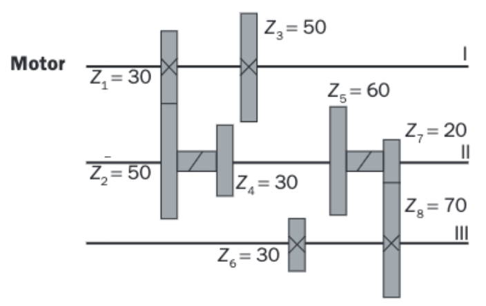
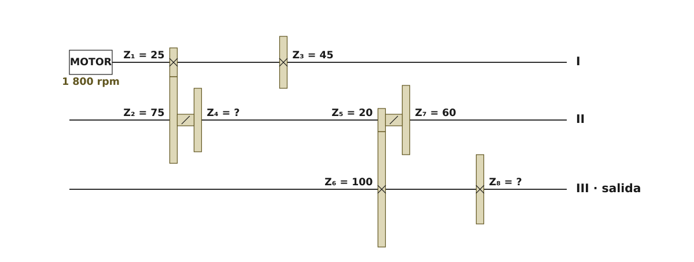

Sesiones 4–5
Cuando queremos transmitir movimientos circulares que implican altas potencias, las ruedas y las poleas con correa pueden resbalar entre sí, impidiendo la correcta transmisión del movimiento. Para solucionar este problema, se recurre al uso de ruedas con dientes en su periferia, que pueden empujar unos a otros evitando que haya deslizamientos indeseados.
Estas ruedas pueden transmitirse el movimiento de forma directa (engranajes) o a distancia mediante una cadena (transmisión por cadena)
Aunque los engranajes nos permiten transmitir elevadas potencias, tienen el inconveniente de que los choques entre dientes se traducen en vibraciones y ruido mucho mayores que los producidos en las transmisiones mediante ruedas o poleas y correas. Por eso cada sistema tiene sus aplicaciones idóneas y no se usan siempre los mismos mecanismos para todo.
Definiciones y fórmulas comunes
Al igual que en la sección anterior, veremos primeros unas definiciones y fórmulas que se aplican a todos los mecanismos de esta sección.
Elemento motriz y elemento conducido
Seguiremos denominando a las ruedas como hasta ahora, es decir, en el orden en el que se transmiten el movimiento. Por lo tanto, si solo tenemos dos ruedas, la 1 será la motriz y la 2 la conducida.
Fórmula fundamental del movimiento
Como los engranajes son ruedas dentadas, el parámetro fundamental para la fórmula general del movimiento será el número de dientes en vez del diámetro. Aparte de eso, la fórmula es la misma que la vista anteriormente para las ruedas y poleas:
\[n_{1}\cdot Z_{1}=n_{2}\cdot Z_{2}\]
Relación de transmisión (i)
La relación de transmisión se define exactamente igual para cualquier mecanismo de transmisión de movimiento circular, es decir, es la relación entre la velocidad de giro de la rueda conducida y la velocidad de giro de la rueda motriz. Sabiendo esto y habiendo visto ya la expresión de la fórmula fundamental del movimiento, podemos expresar la relación de transmisión tanto en función del número de vueltas por minuto como en función del número de dientes de cada rueda:
\[i=\frac{n_{2}}{n_{1}}=\frac{Z_{1}}{Z_{2}}\]
De nuevo debes fijarte en que, si la expresamos con los números de dientes, hay que invertir el orden: en el numerador irá el de la motriz y en el denominador el de la conducida.
Los mecanismos con engranajes también pueden ser multiplicadores o reductores de la velocidad, según su relación de transmisión sea, respectivamente, mayor o menor que uno. En este caso, lo que nos controla el valor de iserá el número de dientes, por lo que podemos decir que, en general, mientras menos dientes tengan los engranajes, más rápido girarán(a cambio, lo harán con menos par que los engranajes con más dientes)
Engranajes rectos. Características.
Los engranajes rectos son los más simples en su concepción pues consisten en ruedas con dientes en su periferia que son paralelos a su eje de giro.

La geometría de esos dientes debe estar optimizada para obtener una buena transmisión del movimiento con las mínimas vibraciones posibles, pero con unos engranajes rectos estamos limitados en estos aspectos. Resultan fáciles de fabricar, pero tienen el inconveniente de ser muy ruidosos y producir vibraciones. Se emplean cuando la potencia que se va a transmitir y el número de revoluciones con que giran no son muy grandes.

Los engranajes rectos tienen una serie de características que debemos conocer y ser capaces de calcular. Las más importantes son las siguientes:
Circunferencias
- Circunferencia primitiva: es la circunferencia sobre la que se transmiten el movimiento los dientes. Correspondería con la circunferencia de unas ruedas de fricción que se transmitieran el movimiento de forma equivalente. Son, por lo tanto, circunferencias tangentes entre sí.Su diámetro se denota por Dp y es una magnitud fundamental porque todas las demás características del engranaje se pueden relacionar con él, como veremos a continuación.
- Circunferencia exterior:es la circunferencia imaginaria que limita los dientes por su parte exterior. Su diámetro se denota por De.
- Circunferencia interior: es la circunferencia imaginaria que limita los dientes por su base. Su diámetro se denota por Di.

Los diámetros de las circunferencias los expresaremos siempre en milímetros (mm) para hacer los cálculos de la geometría de un engranaje.
Módulo (m)
Se define como la relación entre la medida del diámetro primitivo expresado en milímetros y el número de dientes. Se denota mediante la letra m y se mide en milímetros (mm).
Es una magnitud fundamental en los engranajes, puesto que, para que dos engranajes puedan engranar, es necesario que tengan el mismo módulo.
El valor del módulo se establece mediante cálculos de resistencia de materiales, según la potencia que se necesite transmitir y la relación de transmisión del sistema. Los valores de m están normalizados, por lo que elegiremos el que más se aproxime al que necesitemos. Una vez establecido m, sabremos el diámetro primitivo que deberá tener nuestro engranaje según el número de dientes que necesitemos:
\[D_{p}=m\cdot Z\]
Los diámetros de las circunferencias exteriores e interiores también se fijan a partir del módulo, según estas relaciones:
\[D_{e}=m\cdot (Z+2)\]
\[D_{i}=m\cdot (Z-2,5)\]
Distancia entre ejes
Al igual que en las ruedas de fricción, dos engranajes que engranan entre sí deben tener sus ejes separados exactamente lo que marcan sus circunferencias primitivas, porque son esas circunferencias las que ruedan sin deslizar la una sobre la otra:
\[e=\frac{D_{p1}+D_{p2}}{2}\]
Geometría de los dientes
En esta imagen puedes ver representados los parámetros geométricos más importantes para diseñar los dientes de un engranaje:

Todos estos parámetros se calculan y expresan en milímetros (mm). Son los siguientes:
- Paso (p)
-
Es la longitud en milímetros, medida sobre la circunferencia primitiva, correspondiente a un diente y un hueco consecutivos. Dada la relación que existe entre la circunferencia primitivas y el módulo, podemos expresar el paso como:
\[p=\pi \cdot m\]
- Longitud del diente (b)
-
Es la longitud que tiene el diente del engranaje. Aunque puede variar, se recomienda que sea cuatro veces el módulo del engranaje:
\[b=4m\]
- Cabeza del diente o adendum (h1)
-
Es la parte del diente comprendida entre la circunferencia exterior y la circunferencia primitiva. Su valor coincide con el módulo del engranaje, como se puede comprobar muy fácilmente:
\[ h_{1}=\frac{D_{e}-D_{p}}{2}=\frac{m\cdot (Z+2)-m\cdot Z}{2}=\frac{2m}{2}= m\]
En definitiva:
\[h_{1}=m\]
- Pie del diente o dedendum (h2)
-
Es la parte del diente comprendida entre la circunferencia interior y la circunferencia primitiva. Su valor, por consiguiente es:
\[h_{2}=\frac{D_{p}-D_{i}}{2}=\frac{m\cdot Z-m\cdot (Z-2,5)}{2}=\frac{2,5\cdot m}{2}=1,25\cdot m\]
En definitiva:
\[h_{2}=1,25\cdot m\]
- Altura del diente (h)
-
Es la altura total del diente, comprendida entre el diámetro interior y el diámetro exterior del engranaje. Teniendo en cuenta los valores de la cabeza y el pie de diente, se puede deducir que:
\[h=h_{1}+h_{2}=2,25\cdot m\]
En definitiva:
\[h=2,25\cdot m\]
- Grueso del diente (s)
-
Es el grosor del diente en la zona de contacto, o sea, del diámetro primitivo. Debe ocupar algo menos de la mitad del paso, para poder caber en el hueco del otro engranaje, por lo que se calcula según la expresión:
\[s=\frac{19}{40}p\]
- Hueco entre dientes (w)
-
Es el tamaño del hueco entre dos dientes en la zona de contacto, o sea, del diámetro primitivo. Debe ocupar algo más de la mitad del paso, para poder acomodar al diente del otro engranaje, por lo que se calcula según la expresión:
\[w=\frac{21}{40}p\]
De las definiciones del grueso y el hueco se deduce rápidamente que \(s+w=p\)
Ejercicio resuelto: dimensiones de un engranaje y si engrana con otro
Un engranaje recto tiene módulo m = 3 mm y Z = 24 dientes.
a) Calcula su diámetro primitivo, exterior e interior, el paso, la altura del diente y su longitud. b) ¿Engranará con otra rueda de 120 mm de diámetro primitivo y 40 dientes? c) Si engranan, ¿a qué distancia quedan sus ejes?
Ver la resolución paso a paso
Paso 1. Empieza SIEMPRE por el diámetro primitivo.
El módulo es la pieza que lo gobierna todo: es el diámetro primitivo por cada diente.
\[D_{p}=m\cdot Z\]
Sustituyendo: Dp = 3 · 24 = 72 mm.
El diámetro primitivo es el de la circunferencia por la que «ruedan» los dos engranajes, no el que medirías con un calibre por fuera.
Paso 2. Los otros dos diámetros salen del primitivo.
El diente sobresale un módulo por fuera (cabeza) y se hunde 1,25 módulos por dentro (pie):
\[D_{e}=m\cdot (Z+2)\]
\[D_{i}=m\cdot (Z-2{,}5)\]
Sustituyendo: De = 3 · 26 = 78 mm y Di = 3 · 21,5 = 64,5 mm.
Paso 3. Paso, altura y longitud del diente.
Todas dependen solo del módulo:
\[p=\pi \cdot m\]
\[h=2{,}25\cdot m\]
\[b=4\cdot m\]
Sustituyendo: p = π · 3 = 9,42 mm; h = 2,25 · 3 = 6,75 mm; b = 4 · 3 = 12 mm.
Fíjate en que el número de dientes NO aparece en ninguna de las tres.
Paso 4. Para saber si engranan, compara los módulos.
Dos engranajes solo pueden engranar si tienen el mismo módulo: si no, los dientes de uno no caben en los huecos del otro. Del segundo:
\[m=\frac{D_{p}}{Z}\]
Sustituyendo: m2 = 120 / 40 = 3 mm.
Coincide con el primero, así que sí engranan. No basta con que las ruedas «parezcan» compatibles por su tamaño.
Paso 5. Distancia entre ejes.
Como ruedan una sobre otra por sus circunferencias primitivas:
\[e=\frac{D_{p1}+D_{p2}}{2}\]
Sustituyendo: e = (72 + 120) / 2 = 96 mm.
Resultados: Dp = 72 mm; De = 78 mm; Di = 64,5 mm; p = 9,42 mm; h = 6,75 mm; b = 12 mm. Sí engranan (m = 3 en las dos) y sus ejes distan 96 mm.
Otros tipos de engranajes
Ya hemos visto que los engranajes rectos tienen ciertas limitaciones. Para superarlas, se diseñan engranajes con otras geometrías:
Engranajes helicoidales
Se caracterizan por tener sus dientes inclinados respecto de su eje.

Tienen la particularidad de estar engranando siempre varios dientes a la vez. Esto da lugar a que el esfuerzo de flexión se reparta entre ellos durante la transmisión, con lo que hay menos posibilidades de rotura y menos ruidos y vibraciones. Son idóneos para transmitir grandes potencias y para funcionar a gran número de revoluciones.
Los únicos inconvenientes son que resultan más caros, ya que son más difíciles de fabricar, y que producen un esfuerzo axial sobre los ejes.
Engranajes en V
Con objeto de compensar las fuerzas axiales, se emplean dos engranajes cuyos dientes forman un ángulo complementario, que se unen entre sí formando un engranaje en V:

Con este diseño se producen dos esfuerzos axiales opuestos que se cancelan entre sí, evitando que se transmitan a los árboles.
Son mucho más silenciosos y resistentes que los engranajes rectos e incluso que los helicoidales, pero aún así se utilizan poco debido a su dificultad de fabricación y de mantenimiento.
Engranajes cónicos
Se utilizan cuando queremos transmitir movimiento entre dos árboles o ejes que se cortan. Dependiendo de la geometría de sus dientes, los encontramos de dos tipos:
| Engranajes cónicos de dientes rectos | Engranajes cónicos de dientes helicoidales |
 |
 |
Los de dientes helicoidales son muy complicados de fabricar, pero muy silenciosos comparados con los de dientes rectos.
Hipoide
Se trata de dos engranajes cónicos helicoidales, pero uno de ellos está desplazadopara que sus ejes no se corten sino que se crucen.

Helicoidales cruzados
Son dos engranajes rectos helicoidales, pero los ángulos que forman los dientes son opuestos. La diferencia entre los ángulos de los dientes de uno y otro engranaje es igual al ángulo que forman sus ejes.

Tornillo sin fin-corona
Es un mecanismo irreversible, es decir, el movimiento sólo se transmite desde el tornillo a la corona y nunca al revés. Esto ofrece una ventaja en determinadas situaciones donde queremos que el mecanismo se bloquee por seguridad, por ejemplo, en tornos para elevar materiales o ascensores.

Transmisión por cadena o correa dentada
Cuando necesitamos transmitir movimiento con altas potencias entre ejes que están a una distancia grande, no podemos emplear engranajes gigantescos. Tampoco podemos usar una serie de muchos engranajes conectados unos con otros si no queremos tener muchas pérdidas de energía y complicar en exceso la máquina. En estos casos se recurre a la transmisión de movimiento entre dos ruedas dentadas lejanas a través de una cadena metálica o una correa dentada.
Este tipo de transmisiones cumplen las mismas fórmulas para el movimiento y para la relación de transmisión que los engranajes, es decir, cumplen que:
\[n_{1}\cdot Z _{1}=n_{2}\cdot Z _{2}\]
\[i=\frac{n_{2}}{n_{1}}=\frac{Z_{1}}{Z_{2}}\]
Transmisión por cadena
La transmisión se lleva a cabo mediante una cadena metálica articulada. Idónea para lugares polvorientos en los que se exige una gran durabilidad a la transmisión. Tiene el inconveniente de que es ruidosa y debe estar constantemente lubricada.
 Transmisión por correa dentada
Transmisión por correa dentada
La transmisión se lleva a acabo mediante una correa flexible dentada. Al contrario que la transmisión por cadena, es muy silenciosa y no necesita lubricación. Sin embargo, tiene el inconveniente de que la correa se desgasta y debe ser cambiada periódicamente.

Trenes de engranajes
Normalmente en las máquinas tendremos varios mecanismos encadenados entre sí, por lo que es importante saber sus peculiaridades. Cuando todos los mecanismos de la cadena son engranajes, al conjunto se le denomina tren de engranajes. En esta imagen tienes un ejemplo:

De nuevo hemos nombrado a los diferentes engranajes siguiendo el orden en el que se trasmiten el movimiento. En este ejemplo, el engranaje motriz es el 1 y el movimiento se va transmitiendo hasta llegar al último, el 6, que es la de salida del sistema.
En estos casos, debes tener en cuenta las mismas consideraciones que vimos para los trenes de poleas. Las repasamos:
- Los engranajes que están engranados entre sí cumplen la formula fundamental del movimiento que ya conocemos:
\[n_{1}\cdot Z_{1}=n_{2}\cdot Z_{2}\]
\[n_{3}\cdot Z_{3}=n_{4}\cdot Z_{4}\]
\[n_{5}\cdot Z_{5}=n_{6}\cdot Z_{6}\]
- Los engranajes que giran solidariamente en el mismo eje, no cumplen la fórmula anterior. Simplemente giran a la misma velocidad, independientemente de su número de dientes, por lo que su fórmula será:
\[\require{colorv2} \color{red} {n_{2}\cdot Z_{2}\neq n_{3}\cdot Z_{3}}\ \ \Rightarrow \ \ n_{2}=n_{3}\]
\[\color{red} {n_{4}\cdot Z_{4}\neq n_{5}\cdot Z_{5}}\ \ \Rightarrow \ \ n_{4}=n_{5}\]
- La fórmula de la relación de transmisión en función del número de vueltas por minuto siempre se cumple, para cualquier par de engranajes, ya estén engranados entre sí o no:
\[\\i_{1-2}=\frac{n_{2}}{n_{1}}\ \ ||\ \ i_{2-3}=\frac{n_{3}}{n_{2}} \ \ ||\ \
i_{2-5}=\frac{n_{5}}{n_{2}} \ \ ||\ \ i_{1-6}=\frac{n_{6}}{n_{1}}\]
- La fórmula de la relación de transmisión en función de los números de dientes, solo se cumple si los engranajes están engranados entre sí.
\[i_{1-2}=\frac{Z_{1}}{Z_{2}}\ \ ||\ \ \color{Red} {i_{2-3}\neq \frac{Z_{2}}{Z_{3}}}\]
\[i_{3-4}=\frac{Z_{3}}{Z_{4}}\ \ ||\ \ \color{Red} {i_{4-5}\neq \frac{Z_{4}}{Z_{5}}}\]
\[i_{5-6}=\frac{Z_{5}}{Z_{6}}\]
- Si los engranajes giran en el mismo eje, al ser sus velocidades iguales, su relación de transmisión es directamente igual a uno.
\[i_{2-3}=i_{4-5}=1\]
- La relación de transmisión global(entre el último engranaje conducido y el primero motriz) coincide con el producto de las relaciones de transmisión intermediasde la cadena, como ya demostramos en el caso de los trenes de poleas con correa:
\[i_{1-6}=i_{1-2}\cdot i_{2-3}\cdot i_{3-4}\cdot i_{4-5}\cdot i_{5-6}\]
Los trenes de engranajes son bastante más comunes que los de poleas con correas y suelen representarse gráficamente como se ve en esta figura:

Como puedes observar, los engranajes se nombran siguiendo el orden de transmisión del movimiento, como ya sabemos, y los árboles se nombran mediante números romanos, siguiendo también el orden de transmisión del movimiento.La "X" que se dibuja en los engranajes indica que están fijos y giran solidarios con su árbol.
Caja de velocidades
La caja de velocidades es un caso especial del tren de engranajes. Las cajas de velocidades, además de llevar engranajes fijos, también llevan engranajes que se pueden deslizar. Estos engranajes están pareados y unidos entre sí. Al desengranar con un engranaje, pueden quedar sin engranar o engranando con otro.
Aquí tienes un ejemplo de esquema de una caja de velocidades:

Fíjate en el detalle de que algunos engranajes ahora no llevan la "X" en su símbolo, sino una raya diagonal "/". Esto indica que esos engranajes pueden desplazarse para engranar o desengranar con otros y así modificar la relación de transmisión de la caja de velocidades.
Dado que la distancia entre los ejes no varía, la suma de los diámetros primitivos de los engranajes que engranen entre los dos mismos ejes debe ser la misma. En el ejemplo de la imagen, Dp1 + Dp2 = Dp3 + Dp4. Recuerda que los engranajes que tienen que engranar entre sí deben tener el mismo módulo. Esto significa que, si la suma de los Dp debe ser la misma, entonces también la suma de los números de dientes debe ser la misma. Así, en la caja de velocidades de este ejemplo, debe cumplirse que:
\[\\Z_{1}+Z_{2}=Z_{3}+Z_{4}
\\
Z_{5}+Z_{6}=Z_{7}+Z_{8}\]
Puedes comprobar que, en efecto, esto es así con los datos del ejemplo. Así, si en un problema de cajas de velocidades no te dan todos los números de dientes, acuérdate de calcular los que te faltan usando esta propiedad.
Quizá te preguntes cómo se consigue mover los engranajes de una caja de velocidades para que engranen de diferente forma, teniendo en cuenta que los ejes están girando todo el tiempo. Aquí te dejo un vídeo que explica muy bien cómo funciona una caja de velocidades de un vehículo en la práctica:
Ejercicio resuelto: caja de dos marchas con dientes que faltan
Una caja de velocidades de dos marchas tiene tres ejes. Entre los ejes I y II pueden engranar los pares Z1-Z2 o Z3-Z4; entre los ejes II y III, los pares Z5-Z6 o Z7-Z8. El motor está en el eje I y gira a 1800 rpm.
Datos: Z1 = 25; Z2 = 75; Z3 = 45; Z5 = 20; Z6 = 100; Z7 = 60.

a) Deduce Z4 y Z8. b) Calcula la velocidad del eje III en cada marcha.
Ver la resolución paso a paso
Paso 1. Entiende por qué se pueden deducir los dientes que faltan.
Los ejes de una caja de velocidades están fijos: no se mueven al cambiar de marcha. Como todos los engranajes que trabajan entre los mismos dos ejes tienen el mismo módulo, y la distancia entre ejes vale (Dp1 + Dp2)/2, la suma de diámetros primitivos no puede cambiar. Y si la suma de diámetros no cambia, tampoco la de dientes:
\[Z_{1}+Z_{2}=Z_{3}+Z_{4}\]
\[Z_{5}+Z_{6}=Z_{7}+Z_{8}\]
No es un truco de examen: es la única forma de que las dos marchas quepan en la misma caja.
Paso 2. Aplica la propiedad a cada par de ejes.
Entre I y II: Z4 = (25 + 75) − 45 = 55 dientes.
Entre II y III: Z8 = (20 + 100) − 60 = 60 dientes.
Paso 3. Marcha 1: engranan Z1-Z2 y Z5-Z6.
Las relaciones parciales se multiplican:
\[i_{1}=\frac{Z_{1}}{Z_{2}}\cdot \frac{Z_{5}}{Z_{6}}\]
Sustituyendo: i1 = (25/75) · (20/100) = 0,0667. nIII = 1800 · 0,0667 = 120 rpm. Es la marcha corta: mucha reducción, poca velocidad y mucha fuerza.
Paso 4. Marcha 2: engranan Z3-Z4 y Z7-Z8.
\[i_{2}=\frac{Z_{3}}{Z_{4}}\cdot \frac{Z_{7}}{Z_{8}}\]
Sustituyendo: i2 = (45/55) · (60/60) = 0,8182. nIII = 1800 · 0,8182 = 1472,73 rpm. Es la marcha larga. Fíjate en que el segundo par, 60 y 60, no cambia nada la velocidad: solo transmite.
Resultados: Z4 = 55; Z8 = 60; 120 rpm en la marcha 1 y 1472,73 rpm en la marcha 2.
Ejercicios de engranajes
Clasifica
¿Un engranaje con más dientes tiene los dientes más grandes? Clasifica cada magnitud según de qué depende su valor: solo del módulo, del módulo y del número de dientes a la vez, o de las dos ruedas juntas (es decir, magnitudes que no existen si solo tienes una rueda).
Lista desordenada
En un problema de caja de velocidades es normal que falte algún número de dientes: se deduce. Y no es una fórmula que haya que memorizar, porque los números cambian con cada caja: es un razonamiento en cinco pasos. Ordénalo.
- Los ejes de la caja están fijos y no se mueven al cambiar de marcha
- Por tanto, la distancia entre dos ejes es la misma engrane la pareja de ruedas que engrane
- Esa distancia vale la semisuma de los diámetros primitivos, así que la suma de los diámetros primitivos de cada pareja tiene que ser la misma
- Todas las ruedas que trabajan entre esos dos ejes tienen el mismo módulo, y el diámetro primitivo es el módulo por el número de dientes
- Luego la suma de los números de dientes de cada pareja también coincide, y de esa igualdad se despeja el dato que falta